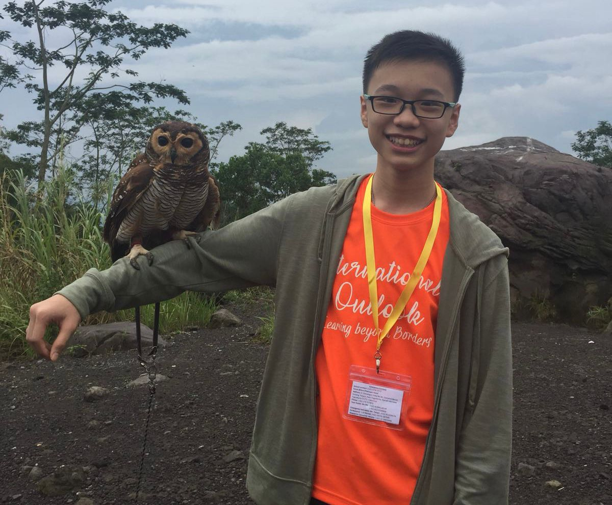

Before Poly,
My Past...

| Year | Award |
|---|---|
| 2018 | Top 5 in Mathematics |
| National Financial Literacy 1st Runner Up | |
| 2019 | Top N Level Performance |
| Edusave Scholarship Award | |
| Eagles Scholarship | |
| CCA Colors Award | |
| 2020 | ITE Community Scholarship Award |
| Director's List | |
| 2021 | ITE Community Scholarship Award |
| Director's List | |
| Eagles Scholarship Award | |
| Adobe Book Award | |
| Outstanding Graduate Award |